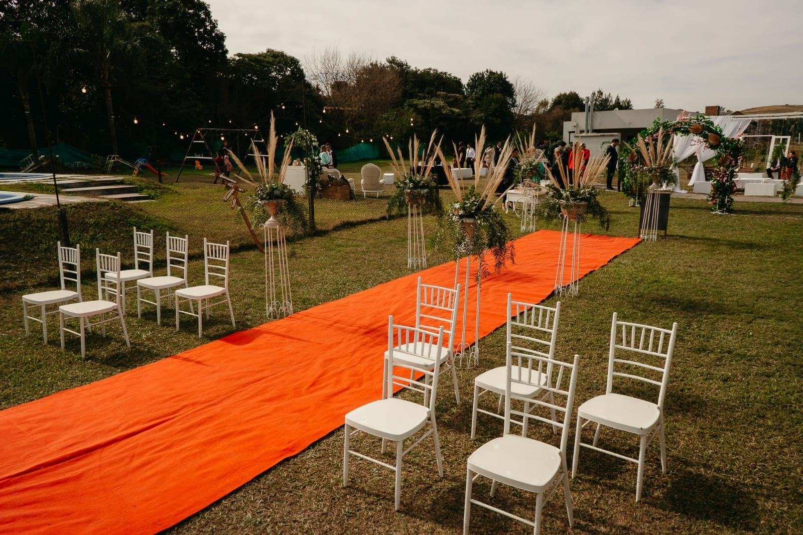
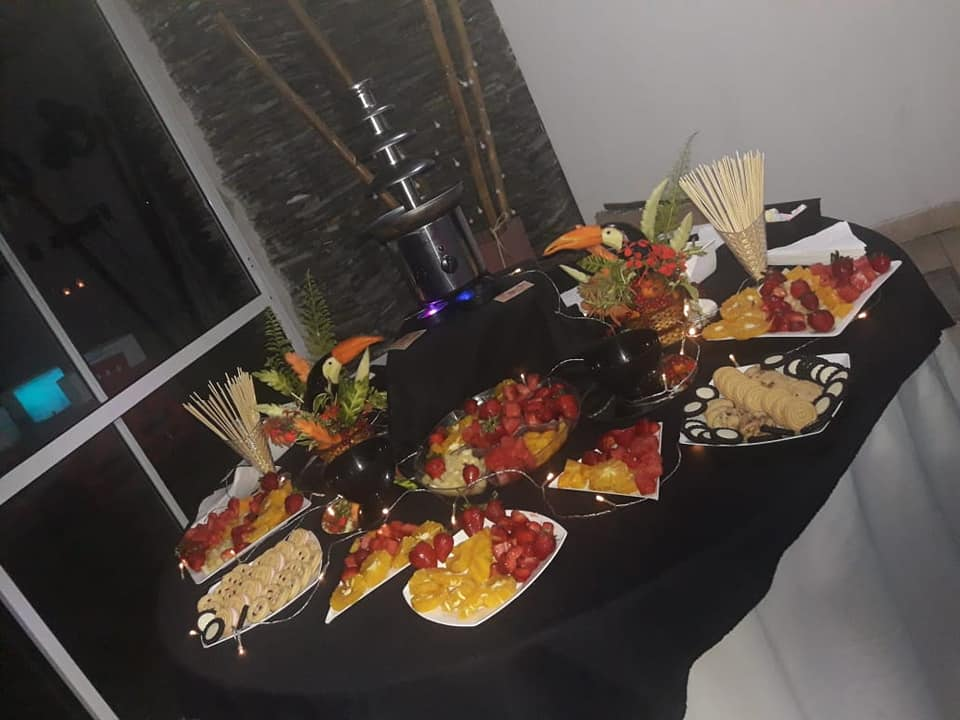

Nuestras Instalaciones
Conoce cada rincón de Los Cardales
Pista de Baile & Tecnología
El corazón de la fiesta está diseñado para ofrecer una experiencia envolvente y de alto impacto visual.
- Acústica: Sonido perimetral de alta fidelidad distribuido estratégicamente.
- Iluminación: Sistemas robóticos móviles y efectos lumínicos interactivos.
- Espacio: Piso tecnológico de alto tránsito optimizado para el baile.

Recepción & Parquizado
Disponemos de un área al aire libre ideal para dar la bienvenida a tus invitados en un entorno natural y sofisticado.
- Welcome Area: Sector de livings exteriores para el cocktail inicial.
- Ceremonias: Espacio verde preparado para bodas civiles o bendiciones de anillos.
- Fotografía: Rincones fotográficos naturales iluminados de forma ambiental.

Cocina & Sector de Catering
Contamos con un área de cocina totalmente equipada e independiente, diseñada para que cualquier servicio de catering trabaje con máxima comodidad y frescura.
- Infraestructura: Amplias mesadas de acero inoxidable y espacio de guardado.
- Equipamiento: Hornos industriales de gran capacidad y freezers para mantener la cadena de frío.
- Logística: Acceso de carga y descarga independiente para proveedores, sin interferir con la entrada principal de los invitados.
